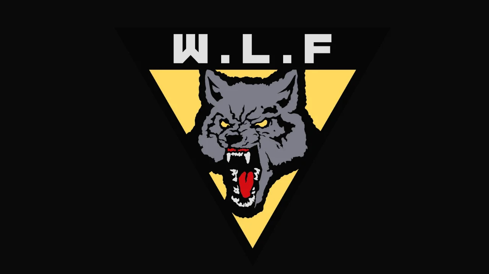

O Dia do Surto (Outbreak Day)
Em 26 de setembro de 2013, uma espécie mutante do fungo Cordyceps começou a se espalhar rapidamente pelos Estados Unidos através de safras agrícolas contaminadas, atingindo centros urbanos em questão de horas.
Sem vacina ou cura, os governos colapsaram. O exército assumiu o controle através da FEDRA, estabelecendo Zonas de Quarentena muradas sob lei marcial, enquanto grupos rebeldes como os Vagalumes passaram a lutar pela restauração da democracia e pela busca de uma cura.
Vinte anos depois, em 2033, a natureza tomou as cidades abandonadas. A escassez de suprimentos transformou os sobreviventes remanescentes em contrabandistas, saqueadores e membros de comunidades isoladas.
Agentes da FEDRA (Agência Federal de Resposta a Desastres).
The Last of Us Part 2
Cinco anos após Seattle, Ellie vive em Jackson ao lado de Joel, tentando reconstruir a relação abalada pela revelação de que ele mentiu sobre a cura. A tranquilidade termina quando Abby, uma ex-Vagalume, encontra Joel e o mata diante de Ellie como vingança pela morte de seu pai, o cirurgião que Joel assassinou no hospital anos antes para salvar Ellie de uma cirurgia para a tal cura. Devastada, Ellie parte para Seattle determinada a encontrar Abby e punir todos os envolvidos, mergulhando cada vez mais em violência e trauma enquanto perde partes de si mesma ao longo do caminho.

Logo da W.L.F (Frente de Libertação de Washington). Mascote é um lobo por "W.L.F" poder ser relacionado com wolf (lobo em inglês).